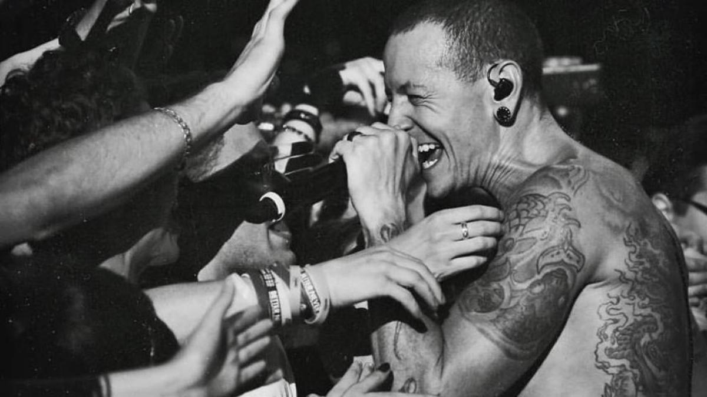
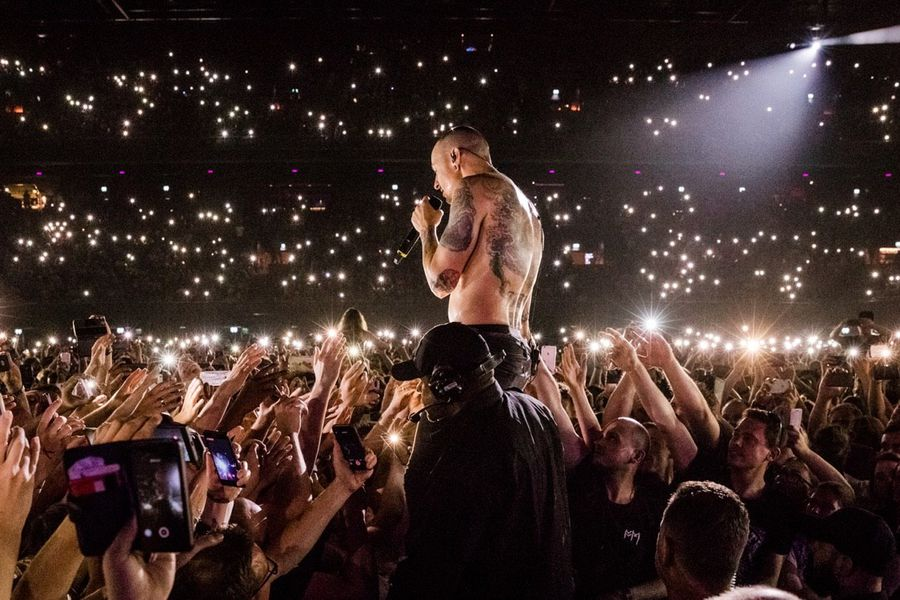
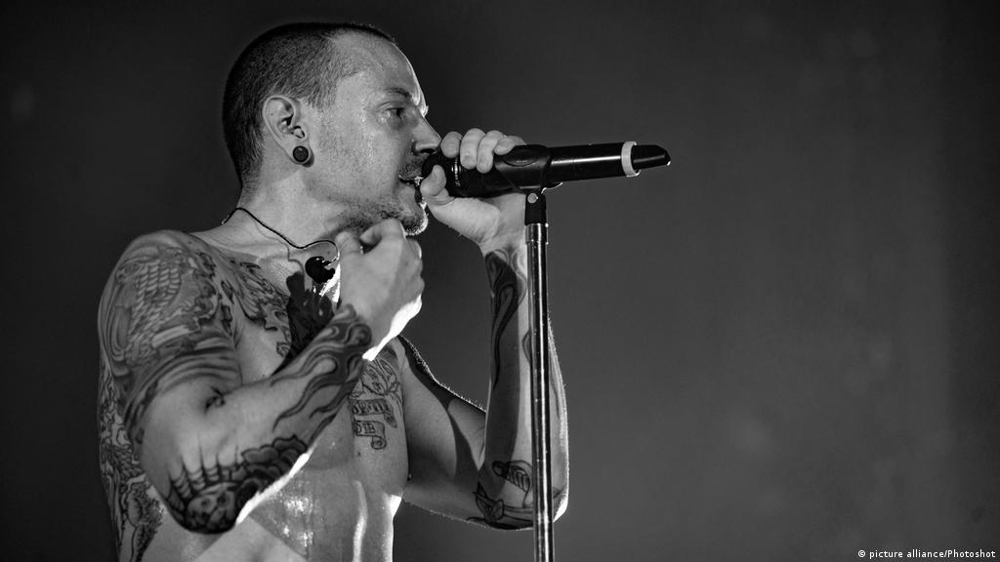
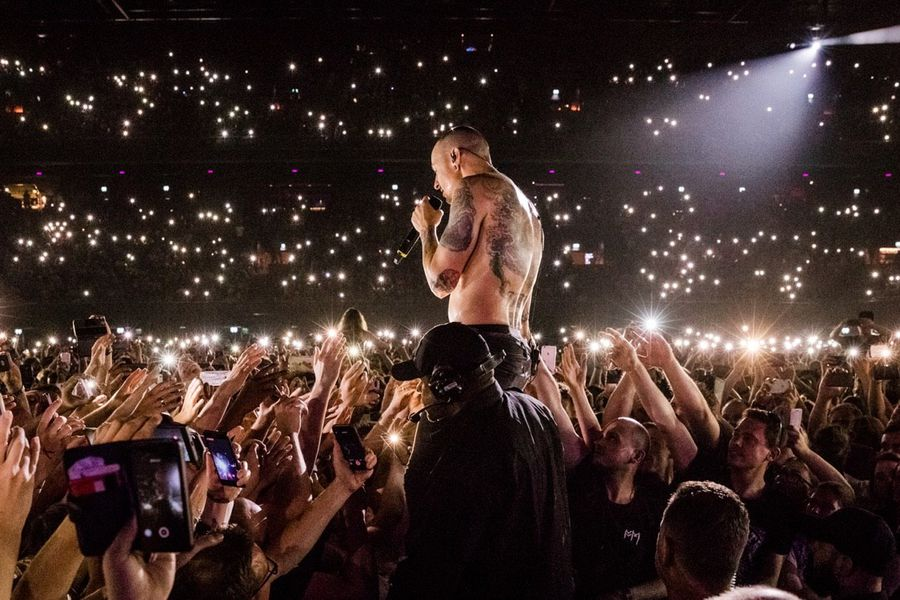
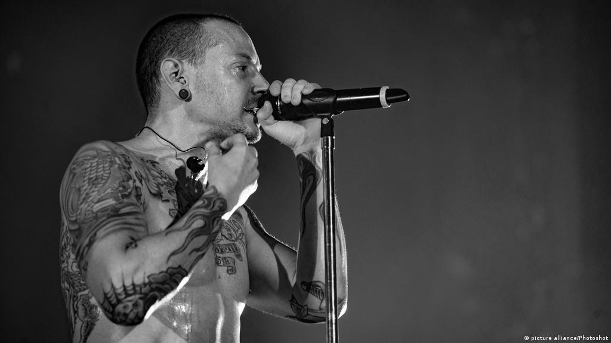

Biografía
En los Estados Unidos, en el año 1996 se fundó la banda de la mano de: Mike Shinoda, Dave Farrell, Joe Hahn, Brad Delson, Rob Bourdon y Mark Wakefield, este último como voz principal de la banda. Ese mismo año iniciaron con su primer proyecto llamado Xero; sin embargo no tuvieron gran éxito en la búsqueda de un sello discográfico ya que ninguno mostró interés en su trabajo, lo que ocasionó la renuncia de Mark Wakefield. Poco después, Chester Bennington se incorporó a la banda como vocalista; el grupo realizó su primera presentación en un club de Los Ángeles y siendo respaldados por Jeff Blue, en aquel entonces vicepresidente de Warner Bros. Records, lograron firmar con el sello en 1999. El nombre del grupo es un juego de palabras haciendo referencia al Lincoln Park en Santa Mónica.
Tiempo después el en aquel entonces vocalista deja la banda lo que provocó que el grupo buscara otro vocalista, Shinoda puso un anuncio en un periódico con el fin de contratar a un nuevo vocalista. Chester Bennington se interesó en aquel anuncio. Bennington es del estado de Arizona, estaba en el grupo Grey Daze y además empezó a grabar discos con el grupo mencionado anteriormente desde los 16 años. Recibió los demos del grupo, unos con las canciones interpretadas por otro vocalista y otro con las versiones instrumentales. Una vez terminado el trabajo de Bennington de grabar su voz en los demos instrumentales, los llamó avisando que estaba listo. Los de la banda le pidieron que una grabación que Bennington hizo la pusiera al teléfono. La banda quedó impresionada por su voz, por lo que decidieron convocarlo inmediatamente.
En 1999 tras la llegada e intregación de Chester Bennington, la banda se cambió el nombre a Hybrid Theory, pero al tratar de registrar el nombre se encontraron con el problema de que ese nombre ya era utilizado por otro grupo. Tras tanta charla sobre el nombre que llevarían, Chester propuso que la banda se llamara Lincoln Park como un homenaje al Lincoln Park de Santa Monica, desde ese momento la banda se llamó Lincoln Park, pero más tarde surgió otro problema esta vez relacionado con el dominio "lincolnpark.com" el cual costaba más de lo que la banda se podía permitir, entonces cambiaron la palabra lincoln por linkin llamandose desde ese momento hasta la actualidad "Linkin Park".
En el año 2000, Linkin Park logra sacar su primer album llamado Hybrid Theory. Un año más tarde (2001), Linkin Park formó parte en el Ozzfest, en el que estuvieron muchos artistas en gira, como Marilyn Manson, Slipknot, Crazy Town, Papa Roach, y Disturbed. Fue una época en que Linkin Park recibió muchas invitaciones para realizar giras de alto perfil como por ejemplo en el recién mencionado Ozzfest, en el Family Values Tour y en el KROQ Almost Acoustic Christmas. La banda inició su propia gira llamada Projekt Revolution, en la que participaron artistas invitados como Cypress Hill, Ademas, DJ Z-Trip, Xzibit, Mudvayne, Blindside y Snoop Dogg. Dentro de un año, Linkin Park había realizado más de 320 conciertos. También en el 2001, el bajista Koziol sale del grupo ya que vuelve Farrell. Cada cierto tiempo el grupo logró sacar álbumes que fueron bien recibidos por los fans, lograron hacer varias giras haciendose conocer más y más.
Bennington formó su propia banda, Dead by Sunrise, como un proyecto paralelo en 2005. El álbum debut de la banda, Out of Ashes, fue lanzado el 13 de octubre de 2009. Se convirtió en el cantante principal de Stone Temple Pilots en 2013 para lanzar la obra extendida High Rise el 8 de octubre de 2013, a través de su propio sello discográfico, Play Pen, pero se fue en 2015 para centrarse únicamente en Linkin Park. Como actor, apareció en películas como Crank (2006), Crank: High Voltage (2009) y Saw 3D (2010).
Bennington luchó contra la depresión y el abuso de sustancias durante la mayor parte de su vida, desde su niñez. El 20 de julio de 2017 fue encontrado muerto en su casa de Palos Verdes Estates, California; su muerte fue declarada suicidio por ahorcamiento. La revista Hit Parader colocó a Bennington en el puesto 46 de su lista de los «100 mejores vocalistas de metal de todos los tiempos». Bennington ha sido acreditado por varias publicaciones como uno de los mejores vocalistas de rock de su generación.
 


